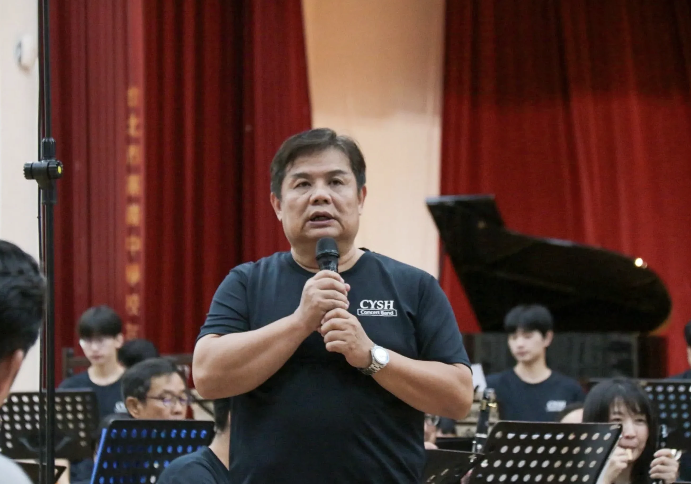
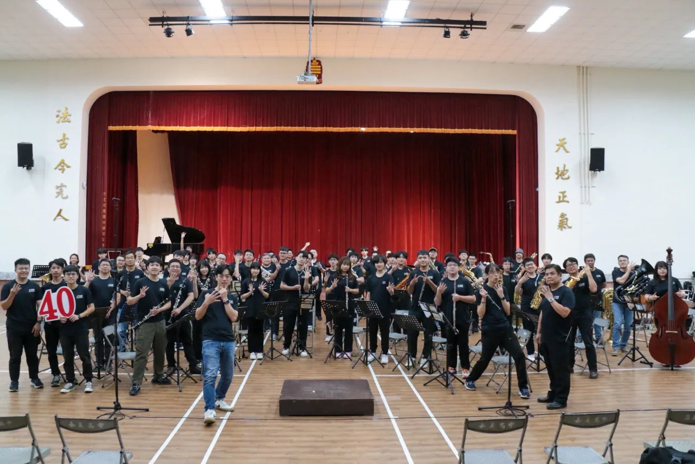
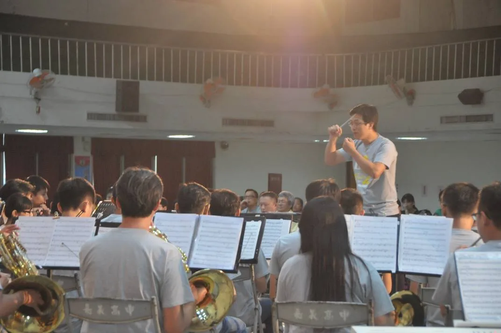

演出資訊
關於這場音樂會
「為伍」代表相聚、陪伴與同行。睽違六年，嘉義高中校友管樂團與在校生重新回到嘉義市政府文化局音樂廳，讓不同世代的嘉中管樂人再次在同一座舞台相遇。
上半場由經典管樂原創與民謠作品展開，並由黃鈺芠擔任 Philip Sparke《Manhattan》小號獨奏；下半場則橫跨電玩交響組曲、流行音樂、電影音樂與日本 City Pop，呈現管樂團多元的聲音面貌。
團長的話

歡迎各位蒞臨 2026 年第 41 屆嘉義高中校友暨在校生聯合音樂會《為伍》。
從 1931 年嘉中管樂社創立至今，吹奏音樂的熱情在校園與社辦裡延續了近百年。每年夏天，來自不同世代的校友與在校生因音樂相聚，在同一座舞台上分享熟悉的旋律與共同的記憶。
「為伍」，代表著相聚、陪伴與同行。睽違六年，我們重新回到熟悉的嘉義市政府文化局音樂廳。感謝每一位撥空到場的聽眾，願今日的樂音陪伴大家，也與我們一同見證不同世代在舞台上的相遇。
嘉義高中校友管樂團

嘉義高中校友管樂團於 2008 年正式立案為演藝團體。樂團由散落於全國乃至世界各地的嘉中管樂校友組成，團員編號橫跨數十個世代字頭。
校友團秉持「傳承、創新與熱情」的理念，每年夏天籌辦「校友暨在校生聯合音樂會」，讓畢業多年的學長們回到熟悉的譜架前，與在校學弟們共同合奏，透過樂音延續對管樂的熱愛與世代交替的情感。
國立嘉義高級中學管樂社

國立嘉義高級中學管樂社創立於 1931 年（日治時期昭和六年），是臺灣歷史最悠久的高中學府管樂團之一。
社團在長達九十餘年的歲月中，培育出無數傑出的音樂家與熱愛音樂的各領域人才。在校生團員在極具傳承精神的樂團指導下，連年在音樂比賽與演出中展現亮眼成績，是嘉義高中最具代表性的社團之一。
指揮與獨奏

曲目
上半場
- 閃耀的管樂 Flashing WindsJan Van der Roost／楊・范德魯斯特／演奏時間：約 4 分 07 秒／指揮：丁肇賢
《Flashing Winds》（閃耀的管樂）是比利時作曲家楊・范德魯斯特於 1989 年創作的管樂合奏作品，由「Het muziekverbond van West-Vlaanderen」（西佛蘭德斯音樂聯盟）委託，獻給比利時的 Arlequino 青年樂團。這是一首充滿活力、色彩豐富且效果強烈的管樂作品。
樂曲以簡短而莊嚴的信號曲風格開場，呈現強而有力的和弦音塊，隨後便以穩定的快速節奏一路奔向終點，中間沒有任何速度變化，展現持續的動能與光彩。作曲家巧妙運用管樂團的豐富配器，讓音樂充滿色彩與效果；開頭的和弦音塊也在結尾處再度出現，形成結構上的統一與呼應，讓整首曲子既熱烈又具凝聚力。
- 邦妮杜恩的美麗河畔 Ye Banks and Braes o' Bonnie DoonPercy Grainger／帕西・葛人傑／演奏時間：約 2 分 00 秒／指揮：丁肇賢
這是澳洲裔美國作曲家帕西・葛人傑對蘇格蘭傳統民謠的著名管樂改編作品，原曲為 Robert Burns 於 1791 年創作的詩歌。這是一首緩慢、抒情的民謠改編，展現葛人傑對英國民間音樂的熱愛與獨特處理手法。
音樂以蘇格蘭民謠旋律為核心，營造寧靜而略帶憂傷的氛圍，彷彿描繪杜恩河畔的美麗風景與失落愛情的感慨。葛人傑運用豐富的和聲、溫柔的對位旋律與變化速度，讓樂曲充滿魅力與共鳴；木管與銅管交織出豐富層次。整首曲子由兩個十七小節的樂段構成，結構簡潔卻情感深刻，是適合展現樂團音色與表現力的佳作。
- 七夕 たなばた／The Seventh Night of JulyItaru Sakai／酒井格／演奏時間：約 8 分 38 秒／指揮：盧宓承
《The Seventh Night of July / Tanabata》（七夕）是日本作曲家酒井格以日本傳統節日七夕為靈感創作的作品，充滿東方詩意與管樂色彩。酒井格出生於大阪，高中時加入管樂團並開始創作；《七夕》是他最早的管樂作品之一，後續他也創作多首廣受歡迎、融合日本傳統元素與現代管樂技法的作品。
樂曲中段由中音薩克斯風與上低音號二重奏代表傳說中的男女主角，情感豐富而動人。整體結構生動，結合慶典的熱鬧、銀河的夢幻與相會的喜悅，展現強烈的畫面感與敘事性；多樣的打擊樂器也為作品增添豐富氛圍。這首作品是酒井格的成名作之一，也是亞洲管樂文獻中的熱門曲目。
- Novena to Seagate OvertureJames Swearingen／詹姆士・史威林金／演奏時間：約 7 分 30 秒／指揮：翁啟榮
James Swearingen 是美國當代著名的管樂作曲家、編曲家、指揮家與音樂教育家，已出版超過 700 首管樂作品與編曲，涵蓋多樣形式與風格；其中多首為委託創作，並廣泛選入各級比賽與音樂節指定曲目。他的音樂以旋律優美、結構清晰且適合學生演奏著稱。
管樂界常有趣聞提到，Swearingen 的作品多到可以自由銜接變換。本次音樂會選擇兩首風格不同的樂曲串聯演出，從《Novena》過渡至《Seagate Overture》，在熟悉的管樂語彙中展現不同的情緒與色彩。
- 曼哈頓 ManhattanPhilip Sparke／菲利浦・史巴克／演奏時間：約 9 分 00 秒／指揮：丁肇賢／獨奏：黃鈺芠
菲利浦・史巴克是當代英國著名的管樂作曲家，以豐富的旋律、精湛的技巧展現，以及適合各級樂團演出的作品聞名。他的《Manhattan》（曼哈頓）是一首為小號與管樂團而作的獨奏作品，於 2004 年出版，成為現代小號獨奏曲目中的重要代表作。
全曲以「紐約的一個週末」為主題，生動描繪曼哈頓的都市風情，分為兩個樂章。
第一樂章〈Saturday Serenade（星期六小夜曲）〉帶有藍調（bluesy）風格，氛圍慵懶而富有爵士感。作曲家想像紐約週六夜晚的景象——或許是在煙霧繚繞的爵士酒吧中，充滿迷人的城市夜生活氣息。小號獨奏在此展現優美的抒情線條，與樂團伴奏交織出溫暖而略帶慵懶的爵士氛圍，考驗演奏者的音色控制與音樂表現力。
第二樂章〈Sunday Scherzo（星期日諧謔曲）〉與第一樂章形成鮮明對比，是一個充滿活力、節奏鮮明的快板樂章。作曲家在創作時想像清晨於中央公園慢跑的畫面，音樂輕快、跳躍而富有生氣；樂章最後進入更急速的尾聲（coda），以華麗而燦爛的方式結束全曲，充分展現小號的技巧與輝煌音色。
《Manhattan》融合古典管樂的結構與現代爵士、流行元素，旋律性強、畫面感豐富，既有抒情詩意，也充滿節奏活力。它不僅考驗獨奏者的全面技術，也讓聽眾彷彿親臨紐約，感受這座城市的多元魅力。
下半場
- 銀河交響組曲（選自《超級瑪利歐銀河》） Symphonic Suite of Galaxy (from Super Mario Galaxy)Koji Kondo、Mahito Yokota／近藤浩治、橫田真人／arr. 尚水堂／演奏時間：約 8 分 30 秒／指揮：丁肇賢
《超級瑪利歐銀河》的配樂由橫田真人（Mahito Yokota）擔任主要作曲，近藤浩治（Koji Kondo）擔任音樂監督並創作數首關鍵曲目，如〈Egg Planet〉與羅莎塔觀測所主題。
這是瑪利歐系列首次大規模採用交響樂團錄音，由 Mario Galaxy Orchestra 演奏，成功營造宇宙浩瀚壯麗的氛圍。橫田以管弦樂為主軸，結合電子音色，打造出既宏偉又充滿冒險感的音樂風格，擺脫以往「可愛」的印象，轉向「酷炫」與史詩感。整套原聲帶評價極高，被視為遊戲音樂中的經典之作。
橫田在創作初期曾被近藤否定「過於可愛」的方向，後來調整為更有氣勢的管弦編曲，並邀請近藤親自譜寫幾首核心主題，讓整部作品在宏大與親切之間取得平衡。著名曲目如〈Gusty Garden Galaxy〉與〈Purple Comet〉主題，至今仍被廣泛運用於其他系列遊戲。
- 治癒世界 Heal the WorldMichael Jackson／麥可・傑克森／arr. Ron Sebregts／演奏時間：約 4 分 44 秒／指揮：丁肇賢
《Heal the World》是麥可・傑克森最具代表性的人道關懷歌曲之一，收錄於 1991 年專輯《Dangerous》。這首歌呼籲人們以愛與行動讓世界變得更美好，特別關注兒童與下一代的未來；歌詞充滿反戰與慈悲精神，強調「治癒世界、為全人類創造更好的地方」。傑克森曾表示，這是他最自豪的創作。1992 年，他以此歌為名成立 Heal the World Foundation，致力於改善全球兒童生活，並在 Dangerous 世界巡演中以此作為核心主題。這首歌至今仍是他經典的和平與愛之歌。
- 酒與玫瑰的日子 Days of Wine and RosesHenry Mancini／亨利・曼西尼／arr. Naohiro Iwai／岩井直溥／演奏時間：約 5 分 05 秒／指揮：盧宓承
這首樂曲是亨利・曼西尼（Henry Mancini）作曲、強尼・默瑟（Johnny Mercer）作詞，為 1962 年電影《相見難時別亦難》創作的主題曲，曾獲奧斯卡最佳原創歌曲獎，其後亦由 Frank Sinatra 等歌手錄唱。
本次演出採岩井直溥編曲、收錄於其電影主題曲合輯的管樂版本。原曲是一首優美而帶有淡淡憂傷的中板抒情曲，描寫美好時光轉瞬即逝的意境；標題取自詩句，象徵人生中短暫而珍貴的快樂歲月。管樂編曲保留原曲的優雅與詩意，音色溫暖而富有層次，展現經典電影音樂在管樂編制下的另一種魅力。
- 日本風情畫 XXII：City Pop 組曲 ジャパニーズ・グラフィティXXII シティー・ポップ・メドレー／Japanese Graffiti XXII: City Pop Medleyarr. Tohru Kanayama／金山徹／演奏時間：約 7 分 55 秒／指揮：丁肇賢
這首樂曲由金山徹編曲，收錄於《New Sounds in Brass 2024》（NSB 第 49 集），選取 1970 至 1980 年代日本 City Pop 黃金時期廣受歡迎的五首經典名曲組成組曲，依序為山下達郎〈SPARKLE〉、竹內瑪莉亞〈プラスティック・ラヴ〉（Plastic Love）、大瀧詠一〈君は天然色〉、泰葉〈フライディ・チャイナタウン〉，以及松原みき〈真夜中のドア～stay with me〉。
編曲保留 City Pop 特有的洗練都會感與懷舊氛圍，同時充分發揮管樂豐富的音色與節奏律動。近年 City Pop 在全球重新受到矚目，這首組曲捕捉了這股熱潮，兼具懷舊與現代感，是現代演出中相當受歡迎的曲目。
演出人員名單
| 聲部／角色 | 人員 |
|---|---|
| 長笛 | 7112 何權烈、0511 翁書偉、0611 蔡詠竹、0711 蔡緯宸、1111 王宥涵、1102 湯喻絜、1302 范語承 |
| 雙簧管 | 8912 黃耀瑩、9921 劉炫廷 |
| 薩克管 | 7601 盧明泰、8431 鄭鈞元、0631 呂裕翔、1132 張宥閎、1131 林佳蔚、1232 林筱菱、1231 陳佑翔、1201 羅允翔、1432 張景盛、1431 葉濬維 |
| 法國號 | 8841 魏仕杰、8802 劉議謙、1401 張淮淵 |
| 豎笛 | 7222 李吉峰、7921 莊富益、8521 賴俊甫、8922 陳正龍、8901 黃信又、9122 吳瑩娟、9721 葉哲良、9802 李亞璿、1001 林亦安、1121 林宇勝、1221 洪福疄、1321 黃昱崴、1301 蔡承真 |
| 小號 | 9202 蔡淳任、9903 陳信慈、0951 范尚華、1052 郭銓、1051 黃鈺芠、1352 葉天成、1351 黃志嘉 |
| 長號 | 7962 范庭福、8162 曾裕圓、8861 簡晟軒、9601 張永澤、0323 董書菡、1161 林佑瑄 |
| 上低音號 | 6801 游淮洲、9871 陳韋龍、1071 侯鈞瀚 |
| 低音號 | 7581 翁啓榮、1181 侯翔升、1281 黃俊順、1381 黃甄逸、1482 侯又新 |
| 打擊 | 7502 陳志鳴、8792 蔡侑恬、0891 李運昶、1002 蔡程弘、1291 蔡昀翰、1202 許淵筑 |
| 低音提琴 | 1290 王泰友 |
幕後行政團隊
贊助與致謝
致謝：國立嘉義高級中學、嘉義市政府文化局、林哲瑋、鄭華翰、蘇羿亘、黃怡禎、謝建庭、黃馨儀、邱彥瑋、熱心贊助之全體校友與親友、所有蒞臨現場支持的樂迷朋友
節目冊
線上節目冊保留第 41 屆《為伍》演出當日的完整內容與閱讀介面。
相關文章
- 8/1 莫名其妙烤香腸大會：吃完香腸，就一起上台吧！
2026-07-23．校友聯演前最重要的傳統活動回來了！8/1（六）下午三點開始備料，所有校友與在校生都歡迎回來；香腸、蒜頭與久違的夥伴，正在嘉中等你。 - 7/19 團練日：當社辦的聲音，開始望向舞台
2026-07-19．《為伍》購票資訊正式上線後的週日團練，指揮台前、低音聲部與一張張譜架都更靠近完整樂團的樣子；8/8 的舞台，正在被每一次合奏慢慢點亮。 - 7/18 團練日：譜架一張張展開，聲音慢慢靠攏
2026-07-18．週六傍晚的嘉中社辦，樂器與譜架陸續就位，法國號學弟也加入合奏；不同世代一起把《為伍》的聲音往更完整的方向推進。 - 《為伍》OPENTIX 購票連結正式上架！8/8 文化局音樂廳見
2026-07-18．第 41 屆校友暨在校生聯合音樂會《為伍》OPENTIX 購票連結正式上架，8 月 8 日邀你到嘉義市政府文化局音樂廳，和不同世代的嘉中管樂人一起聽見相聚的聲音。 - 7/4 團練日：火雞肉飯、團練室與一壺咖啡
2026-07-04．《為伍》第二個週末團練日，翁啟榮學長從簡單火雞肉飯回到嘉中團練室，也煮起咖啡和大家一起喝。 - 第 41 屆聯合音樂會《為伍》8/8 文化局音樂廳登場
2026-07-02．睽違六年重返嘉義市政府文化局音樂廳，透過 OPENTIX 公開售票，售票資訊將於近期公布。 - 期末考結束，肉趴開烤！在校生迎接《為伍》的暑假
2026-06-30．指導老師簡晟軒帶著在校生舉辦期末烤肉聚會，暑假密集團練即將展開。 - 《為伍》第一次團練啟動！警伯依然是第一個到的人
2026-06-27．第 41 屆校友聯演第一次團練展開，翁啟榮學長一如往常第一個到場開門，團練後再回味一碗嘉中人的火雞肉飯。 - 校友歸隊召集令：《為伍》團練時程公布
2026-06-12．6/27 起每週六日下午團練、8/4–7 平日晚間衝刺，8/8 文化局音樂廳登台，歡迎校友歸隊、親友探班。